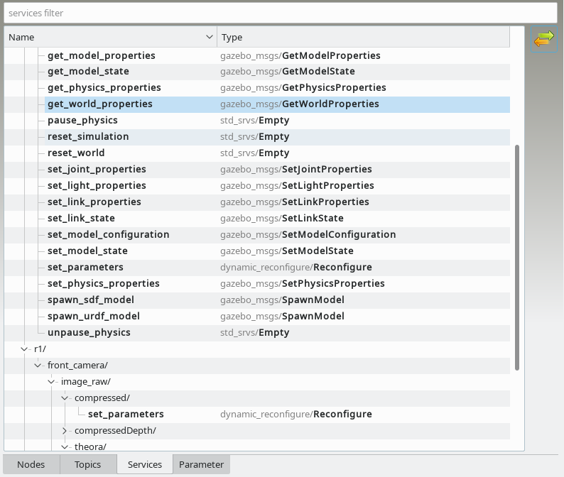

The Services tab shows all in ROS master registered services. The type of the ROS service is also displayed. More information to selected service is displayed in Description Dock.

You can search for a service respectively his type using the filter row at the top.Service control buttons:
|
Call the selected service. If the service require request input, a generated input dialog will be shown. The result of the service call is shown as a dialog:
|